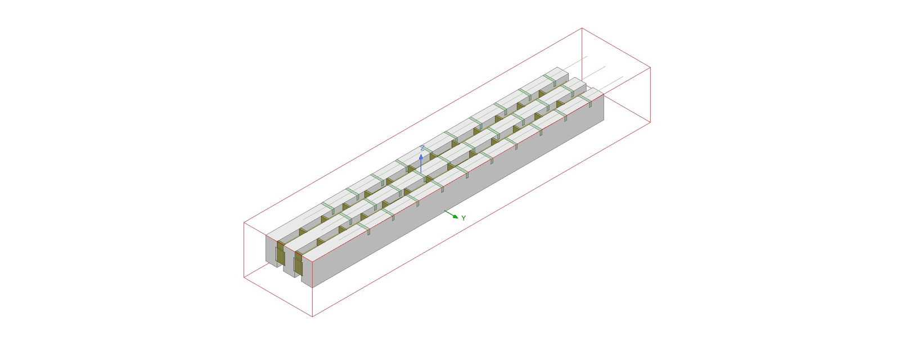
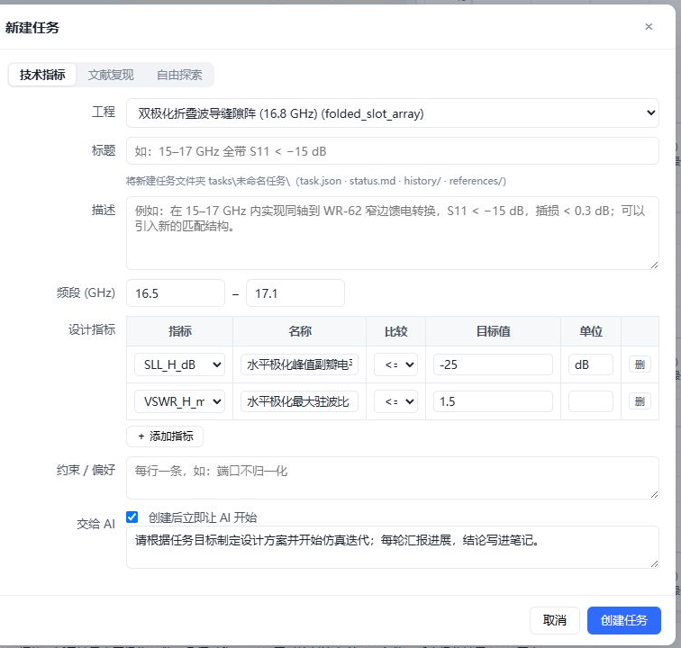
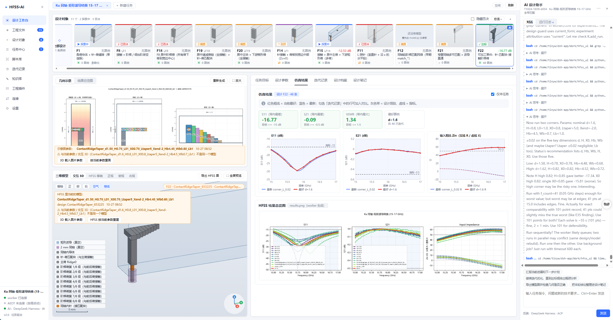
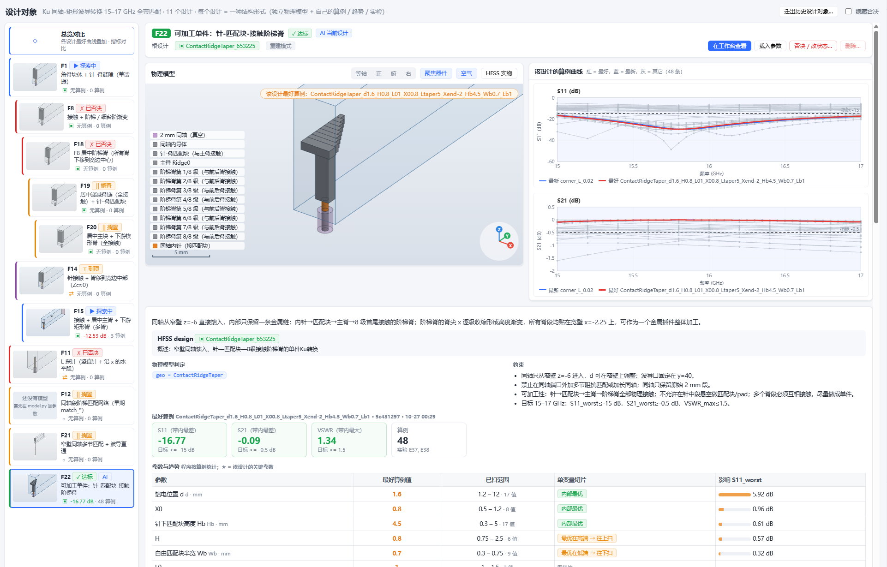
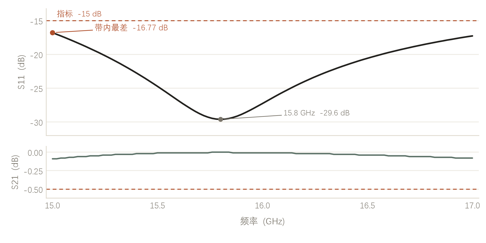
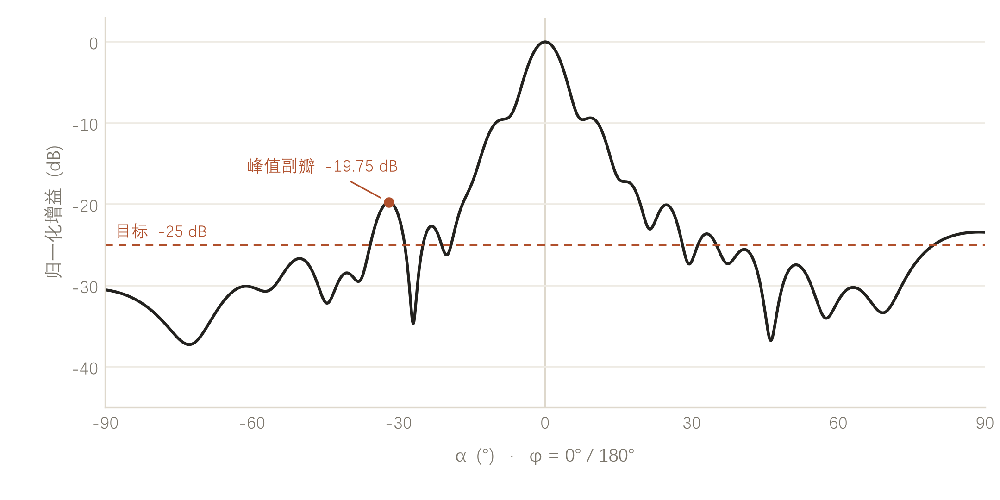

Let AI drive HFSS 让 AI 驱动 HFSS
An AI design console for ANSYS HFSS. You write one sentence — it builds the model, runs the design, and keeps the record. 一个面向 ANSYS HFSS 的 AI 设计台。你写一句话，它建模、迭代、交付，并把过程留在原地。
Beyond MCP and skills · understands the task, understands the model · designs and optimizes on its own · never loses the thread 超越 MCP 和 Skill · 理解任务、理解模型 · 自主设计、自主优化 · 告别遗忘和迷失
woodybuendia@gmail.com · UI shown in Chinese. woodybuendia@gmail.com · 界面语言为中文。

01 — What it is
Built around the task以任务为中心
HFSS-AI treats a design task as the smallest unit of work. Describe the device, the band, the targets and the constraints — then hand it over. HFSS-AI 把「设计任务」当作最小单位。把器件、频段、指标、约束说清楚，然后交出去。
It drives the tool它会用工具
Geometry, ports, meshes, sweeps, extraction — written and debugged by the agent, not clicked by you. 几何、端口、网格、扫参、取数，都由它自己写、自己调通，而不是你去点。
It decides它会判断
It compares every run against one fixed metric definition, and changes route when a line of attack stalls. 每一次求解都按同一套口径判定；一条路走不通，它会换一条。
It leaves a record它留下记录
Parameters, curves, decisions and notes stay in the task folder — readable by the next person, and by the next run. 参数、曲线、判断、笔记都留在任务文件夹里，下一个人能读，下一次运行也能读。
02 — Position
“Anything the interface can do, it can do. Anything the interface cannot do, it writes.” “界面上有的，它都能做；界面上没有的，它写一个就有了。”
We did not wrap HFSS into a fixed set of buttons. That is the difference between automating a workflow and letting a designer work. 我们没有把 HFSS 封成几个固定按钮。这是「把流程自动化」和「让设计师真的干活」之间的区别。
03 — From one sentence
One sentence in, a delivered project out一句话，交一个工程

- You describe你说 Device, band, specs, constraints. Four lines are enough.器件、频段、指标、约束，四行字就够。
- It models它建模 Parametric geometry, ports, mesh — written and debugged by the agent.参数化几何、端口、网格，自己写、自己调通。
- It iterates它迭代 Sweeps, judges, changes route; if it is stuck, it says where.扫参、判断、换路线；卡住了就说清楚卡在哪。
- It delivers它交付
The
.aedtproject, the curves and the conclusions, filed under the task..aedt 工程、曲线、结论，一起归到这个任务下。
04 — Inside
One screen, three zones一屏三块


05 — Connections
Both ends are swappable两端皆可替换
Up to the AI model, down to the HFSS worker. Tasks, metric definitions and history stay in the middle, untouched. 向上接 AI 模型，向下接 HFSS worker。任务、指标口径、历史都留在中间，不受影响。
Upward — the AI向上 — 接 AI
- DeepSeek Harness · ACP
- Long-lived session: memory, sub-agents, files and shell.长期存活的会话：记忆、子代理、文件与 shell。
- Claude Code · OpenCode · Codex · Gemini CLI
- Command-line agents — same CLAUDE.md, same hfss.py, same scripts.命令行 Agent，读同一份 CLAUDE.md，跑同一个 hfss.py。
- Anthropic · OpenAI-compatible
- DeepSeek, Qwen, Kimi, Zhipu, local Ollama — bring a key.DeepSeek、通义、Kimi、智谱、本地 Ollama，填 key 即用。
Downward — HFSS向下 — 接 HFSS
- Worker on the AEDT machine
- A resident Python service drives the solver through PyAEDT.AEDT 机器上常驻的 Python 服务，通过 PyAEDT 驱动求解器。
- SSH · local · manual address
- Pick the connection that fits the machine.远程 SSH、本机、手动地址，按机器条件选。
- Resumable long runs
- If the link drops, the worker comes back and the task continues.链路断了 worker 自动拉起，长任务继续跑。
06 — Evidence
Results before claims有结果，再说能力

−16.77 dB worst S11
Coaxial-to-rectangular waveguide transition, 15–17 GHz. From −12.53 dB to −16.77 dB — about 4.2 dB. Tolerance re-checks at ±0.05 mm (single variable) and ±0.02 mm (combined) passed. Delivered. 同轴—矩形波导转换，15–17 GHz。从 −12.53 dB 到 −16.77 dB，约 4.2 dB 的提升；±0.05 mm 单变量与 ±0.02 mm 组合公差复核均通过。已交付。

−19.75 dB sidelobe · target −25
Dual-polarized folded-waveguide slot array, 16.8 GHz. Target −25 dB, currently −19.75 dB — 5.25 dB to go. Extraction, metric definition and batch study are working; what is left is the structure itself. Shown on purpose: the platform is in development, and it says so. 双极化折叠波导缝隙阵，16.8 GHz。目标 −25 dB，当前 −19.75 dB，还差 5.25 dB。取数、指标口径和批量研究已经跑通，剩下的是结构本身。这一页是故意放上来的：平台在开发中，就把话说明白。
07 — Status
In development开发中
No public build yet. This page is an introduction, not a product page. 还没有公开版本。这里只是介绍，不是产品页。
Working已经可以
- Full loop for a single device: model, solve, judge, record单个器件的完整闭环：建模、求解、判据、记录
- Parallel comparison, feasible designs filtered out automatically多方案并行比较，自动筛出可行解
- One definition for patterns, S-parameters and VSWR方向图、S 参数、驻波等指标的统一定义
- Resumable long runs; results exportable and re-checkable长任务断点可续，结果可导出、可复核
In progress还在做
- Design and optimization of complex arrays复杂阵列的设计和优化
- Manufacturing tolerance and manufacturability constraints加工公差与可制造性约束
- From one design to a product从「一个设计」到「一套产品」的工程化
- Concurrent tasks多任务并发
It is not a general-purpose simulation API; it is an experiment in putting AI into a real design process. 它不是一个通用仿真软件 API，而是把 AI 放进真实设计流程的一次实验。
08 — How to see the AI
Assistant? Replacement? Amplifier.助手？替代者？还是放大器
Each answer is only half right. The real difference is who carries the judgement. 三种说法都只对一半。真正的区别是：谁在承担判断。
“It amplifies the designer’s judgement. It does not replace the designer.” “它放大设计师的判断，而不是取代设计师。”
The machine spreads the possibilities out; you tell it what you have in mind; it builds it. 机器把可能性铺开，把你的想法告诉 AI，AI 来实现。
09 — Waiting list
Try it when the first build is ready第一个版本做好时，来试用
Write to the address below with the subject HFSS-AI waiting list. A short note about your device and your HFSS setup helps us pick the first testers.
发邮件到下面的地址，主题写 HFSS-AI waiting list。简单说一下你的器件和 HFSS 环境，会帮我们挑出第一批试用者。